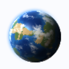
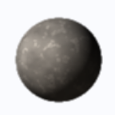
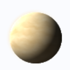
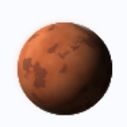
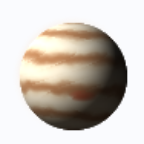
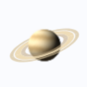

WHO ORBITS · 함께 도는 일곱
학생 한 명 곁을 여섯이 함께 돕니다
- 태양공동 목표 · 모두가 함께 배우는 학교

지구학생 한 명 · 여정의 출발점
수성특수학급 · 가장 가까이, 가장 촘촘히
금성통합학급 · 매일 함께 도는 이웃
화성가정 · 다른 주기로 곁을 지킴
목성특수교육지원센터 · 큰 지원의 중력
토성지역사회 · 고리 같은 연계망
태양공동 목표SPECIAL
EDUCATION
2027
EDUCATION
2027
ONE JOURNEY · 같은 여정
서로 다른 궤도,
같은 여정
속도를 맞추는 것이 아니라 방향을 맞춥니다.
지구학생 한 명SPECIAL
EDUCATION
2027
EDUCATION
2027
REFERENCE · 동심원으로 본 체계
빌려 온 본문 #57 예산 각도 동심원 체계도 · 내용은 다른 가상 예시
태양공동 목표SPECIAL
EDUCATION
2027
EDUCATION
2027
DIFFERENT PERIODS · 저마다의 주기
만나는 주기는 달라도 빠지는 달은 없습니다
- 특수학급수성매일
- 통합학급금성매일
- 가정화성격주 상담
- 지원센터목성달마다 순회
- 지역사회토성학기마다
화성가정SPECIAL
EDUCATION
2027
EDUCATION
2027
REFERENCE · 한곳으로 모이는 선
빌려 온 본문 #94 원인으로 모이는 선 · 내용은 다른 가상 예시
목성지원센터SPECIAL
EDUCATION
2027
EDUCATION
2027
NOW · 지금의 궤도
통합학급에서 보내는 시간이 절반을 넘었습니다
통합학급에서 보내는 시간58%
주당 수업 시간 가운데
지원 인력 1명당 학생7.8명
목표 5.5명
가정과 함께 세운 계획72%
개별화교육계획 기준
자료: ○○교육청 특수교육 실태 조사(가상 예시)
금성통합학급SPECIAL
EDUCATION
2027
EDUCATION
2027
REFERENCE · 누가 맡는가
빌려 온 본문 #61 주 담당 대응표 · 내용은 다른 가상 예시
수성특수학급SPECIAL
EDUCATION
2027
EDUCATION
2027
TO KEEP · 지킬 것 셋
궤도는 달라도 세 가지는 함께 지킵니다
- 방향
학생 한 명의 계획을 모두가 같이 본다
- 주기
저마다의 주기로, 빠지는 달 없이 만난다
- 거리
가까운 곳은 촘촘히, 먼 곳은 넓게 받친다
토성지역사회SPECIAL
EDUCATION
2027
EDUCATION
2027
서로 다른 궤도,
같은 여정
문의 · ○○교육청 특수교육과 · 모든 기관 · 수치는 가상 예시